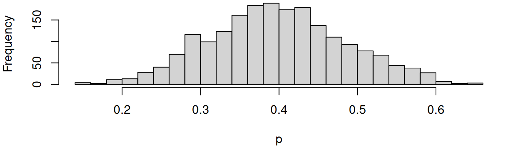
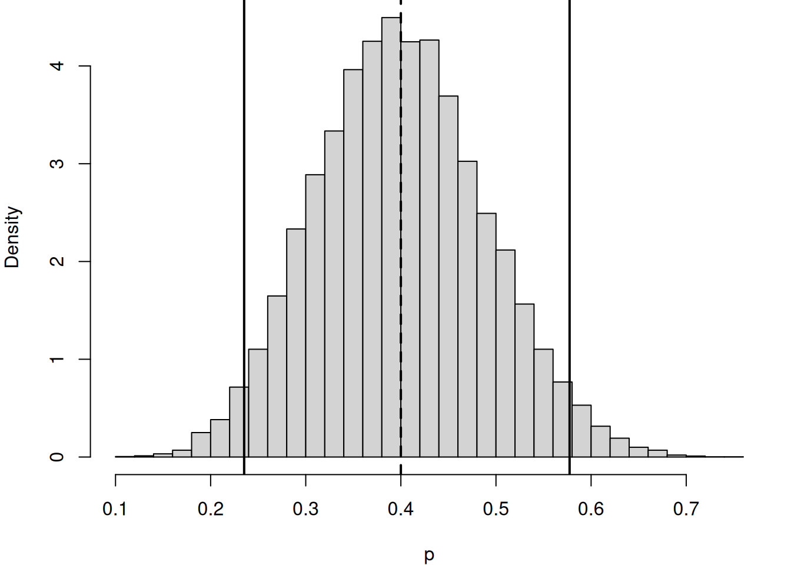

flowchart LR
A[Email] --> B{Spam?}
B -->|Yes 10%| C[Spam]
B -->|No 90%| D[Not Spam]
C -->|WIN 40%| E[Spam + WIN]
C -->|No WIN 60%| F[Spam + No WIN]
D -->|WIN 5%| G[Not Spam + WIN]
D -->|No WIN 95%| H[Not Spam + No WIN]
linkStyle default stroke:#000,stroke-width:2px
12 Bayesian Inference
Bayesian inference is a way of drawing conclusions from data by treating probability as a measure of uncertainty or belief. In this framework, the parameter itself is treated as a random variable. We begin with a prior distribution that represents our initial belief about the parameter. After observing data, we update this belief using Bayes’ theorem to obtain the posterior distribution. The posterior distribution describes what we believe about the parameter after seeing the data, and it allows us to make direct probability statements about the parameter.
12.1 Bayes’ Theorem
Bayes’ rule is a way to update beliefs when new information arrives, letting you reverse the direction of conditional probabilities so you can reason from effects back to possible causes. It links four quantities: the prior probability of a hypothesis, the likelihood of observing certain evidence if that hypothesis were true, the overall probability of the evidence, and the updated (posterior) probability once the evidence is seen.
If \(A\) and \(B\) are events and \(P(B) \neq 0,\) Bayes’ theorem is stated as:
\[ P(A \mid B) = \frac{P(B \mid A)\,P(A)}{P(B)}, \]
where
- \(P(A \mid B)\) is the posterior probability of \(A\) given \(B\),
- \(P(B \mid A)\) is the likelihood of \(A\) given a fixed \(B\),
- \(P(A)\) is the prior probability without any given conditions,
- \(P(B)\) a normalising constant ensuring probabilities sum to one.
In Bayesian inference, \(P(B)\) is fixed and Bayes’ theorem shows that the posterior probabilities are proportional to the numerator, thus
\[ P(A \mid B) \propto P(B \mid A) \cdot P(A). \]
In words,
\[ \text{Posterior} \propto \text{Likelihood} \times \text{Prior}. \]
If events \(A1, A2, \dots,\) are mutually exclusive and exhaustive, i.e., one of them is certain to occur but no two can occur together, then the Law of Total Probability states that \[ P(B)=\sum_{i=1}^k P(B \mid A_i)\,P(A_i). \]
Substituting this expression for \(P(B)\) into the denominator of Bayes’ theorem gives:
\[ P(A_i \mid B) = \frac{P(A_i)P(B \mid A_i)}{\sum_j P(A_i)P(B \mid A_i)}. \]
Example: Suppose a mail server knows the following from past data:
- 10% of all incoming emails are spam.
- 40% of spam emails contain the word “WIN”.
- 5% of non‑spam emails also contain the word “WIN”.
Let \(W\) be the event that the email contains the word “WIN” and \(S\) be the event that the email is spam.
Suppose that you receive a new email and notice it contains “WIN”. Bayes’ rule lets you compute the probability that it is actually spam:
\[ P(S \mid W) = \frac{P(W \mid S) \, P(S)} {P(W \mid S)P(S) + P(W \mid \neg S)P(\neg S)}. \]
Even though “WIN” appears often in spam, the fact that most emails are not spam pulls the probability down. This illustrates the core idea: Bayes’ rule balances how common a cause is (the prior) with how strongly the evidence points to it (the likelihood), giving an updated probability that reflects both.
Note: Logical negation (NOT) symbol is typically written in the form of \(\neg\) or \(\sim\).
First, we identify the probabilities: \[ P(S) = 0.10, \qquad P(\neg S) = 0.90 \]
\[ P(W \mid S) = 0.40, \qquad P(W \mid \neg S) = 0.05 \]
Compute the numerator:
\[ P(W \mid S)P(S) = 0.40 \times 0.10 = 0.04 \]
Compute the denominator:
\[ P(W \mid S)P(S) + P(W \mid \neg S)P(\neg S) = 0.40(0.10) + 0.05(0.90) = 0.085 \]
Compute the posterior probability:
\[ P(S \mid W) = \frac{0.04}{0.085} \approx 0.4706 \]
Therefore, if an email contains the word “WIN”, the probability that it is spam is about 47.1%.
12.2 Bayesian Updating
Bayesian inference is based on the idea of updating our beliefs about an unknown parameter after observing data. Before collecting data, we describe our uncertainty about the parameter using a prior distribution. After observing the data, we combine the prior information with the likelihood of the data using Bayes’ theorem to obtain the posterior distribution.
The posterior distribution represents our updated knowledge about the parameter. In general,
\[ \text{Posterior} \propto \text{Likelihood} \times \text{Prior}. \]
This updating process can be interpreted as a learning process: the prior represents what we believe before seeing the data, while the likelihood reflects the information provided by the observed data. The posterior distribution combines both sources of information.
12.3 Conjugate Priors
Some combinations of prior distributions and likelihood functions lead to particularly convenient forms for the posterior distribution. These are called conjugate priors.
Conjugate priors simplify Bayesian inference because the posterior distribution has a closed-form expression. This means we can compute posterior summaries, such as the mean and credible intervals, without complex numerical methods.
In more complicated models, conjugacy may not hold, and simulation-based methods such as Markov Chain Monte Carlo (MCMC) are required to approximate the posterior distribution.
The followings are common conjugate prior pairs:
| Likelihood | Conjugate Prior | Posterior |
|---|---|---|
| Binomial | Beta | Beta |
| Poisson | Gamma | Gamma |
| Exponential | Gamma | Gamma |
| Normal | Normal | Normal |
Beta-Binomial Conjugate
A common example arises when modelling binary outcomes such as coin flips. Suppose
\[ X_i \sim \text{Bernoulli}(p), \]
where \(p\) is the probability of success.
If we observe \(k\) successes in \(n\) trials, the likelihood follows a Binomial distribution.
In Bayesian inference, a convenient prior for \(p\) is the Beta distribution: \[ p \sim \text{Beta}(\alpha, \beta). \]
The Beta distribution is defined on the interval \([0,1]\), making it suitable for modelling probabilities.
When a Beta prior is combined with a Binomial likelihood, the posterior distribution is also a Beta distribution:
\[ p \mid \text{data} \sim \text{Beta}(\alpha + k, \beta + n - k). \]
This result is known as the Beta–Binomial conjugate model.
The parameters of the posterior distribution can be interpreted intuitively:
- \(\alpha\) and \(\beta\) represent prior information,
- \(k\) and \(n-k\) represent the observed data.
Thus, the posterior parameters combine prior knowledge with information from the data.
Conjugate example (Beta–Binomial): Suppose that during the morning rush, a barista records 20 customers. Among these, 9 customers chose oat milk and the rest chose dairy. Let \(X\) be the number of oat-milk orders out of 20 and \(p\) be the true (but unknown) probability a customer chooses oat milk. This can be modelled as: \[ X \,|\, p \sim \text{Binomial}(n=20, p), \]
which is considered as the likelihood.
First, we give \(p\) a prior distribution (prior belief). We now have
\[ p \sim \text{Beta}(\alpha=3, \beta=7) \]
The parameters can be interpreted as:
- the barista expect ~30% of customers to choose oat milk (prior mean = 0.3)
- but not very certain (small \(\alpha + \beta = 10\))
With the data, we can update your belief.
- Likelihood from Binomial: \(\displaystyle f(X|p)= {20 \choose X} p^X(1-p)^{20-X}.\)
- Prior from Beta: \(f(p) \propto p^{\alpha-1}(1-p)^{\beta-1}.\)
\[ \text{Likelihood}\times\text{Prior} \propto p^{X+\alpha-1}(1-p)^{(20-X)+\beta-1} \]
This expression is exactly the kernel of a Beta distribution. So the posterior must be
\[ p \,|\, X \sim \text{Beta}(\alpha+X, \beta+(20-X)) \]
We observe \(x=9\). Then,
\[ p \,|\, X \sim \text{Beta}(12, 18). \]
set.seed(13); b <- rbeta(2000, shape1 = 12, shape2 = 18)
mean(b)[1] 0.3982516par(mar=c(4,4,0,1)); hist(b, breaks = 30, main = "", xlab = "p")
The posterior mean is 0.4, so our belief shifts from 30% to 40%.
12.4 Posterior mean vs MLE
In frequentist inference, the parameter \(p\) is often estimated using the maximum likelihood estimator (MLE). For the Binomial model, the MLE is
\[ \hat{p}_{\text{MLE}} = \frac{k}{n}, \]
which is simply the sample proportion.
In the Bayesian framework, the estimate of \(p\) is often taken as the posterior mean. For the Beta–Binomial model, the posterior mean is
\[ E[p \mid \text{data}] = \frac{\alpha + k}{\alpha + \beta + n}. \]
The difference between the two estimators highlights the role of the prior distribution.
- The MLE depends only on the observed data.
- The posterior mean incorporates both prior information and the data.
When the sample size \(n\) is large, the influence of the prior becomes small and the posterior mean becomes close to the MLE. When the sample size is small, the prior can have a stronger influence on the estimate.
Example: Beta–Binomial Posterior Mean
Recall the model:
\[ X \mid p \sim \text{Binomial}(n=20, p), \qquad p \sim \text{Beta}(\alpha=3,\beta=7), \]
and we observed \(x=9\) oat-milk orders out of \(n=20\).
By Beta–Binomial conjugacy,
\[ p \mid X=x \sim \text{Beta}(\alpha + x,\; \beta + n - x). \]
Substituting \(\alpha=3, \beta=7, n=20, x=9\) gives
\[ p \mid X=9 \sim \text{Beta}(12,18). \]
If \(p \sim \text{Beta}(a,b)\), then
\[ \mathbb{E}[p] = \frac{a}{a+b}. \]
Therefore, for the posterior \(\text{Beta}(12,18)\),
\[ \mathbb{E}[p \mid X=9] = \frac{12}{12+18} = \frac{12}{30} = 0.4. \]
# Posterior parameters
a <- 12
b <- 18
# Posterior mean (exact)
post_mean <- a / (a + b)
post_mean[1] 0.412.5 Credible intervals
In Bayesian inference, uncertainty about a parameter is summarised using the posterior distribution. From this distribution, we can construct credible intervals.
A credible interval is an interval that contains a specified proportion of the posterior probability.
For example, a 95% credible interval for parameter \(\theta\) satisfies
\[ P(a \leq \theta \leq b \mid y) = 0.95 \]
Unlike frequentist confidence intervals, credible intervals have a direct probabilistic interpretation: given the observed data and the prior distribution, there is a 95% probability that the parameter lies within the interval.
Example: Beta–Binomial Credible Interval
A central 95% Bayesian credible interval is typically defined using posterior quantiles:
\[ \left[q_{0.025},\; q_{0.975}\right], \]
where \(q_\gamma\) is the \(\gamma\)-quantile of the posterior distribution. That is,
\[ P(p \le q_\gamma \mid X=9) = \gamma. \]
So the 95% credible interval is
\[ \left[ F^{-1}(0.025;\, a=12,b=18),\; F^{-1}(0.975;\, a=12,b=18) \right], \]
where \(F^{-1}(\cdot; a,b)\) is the inverse CDF (quantile function) of a Beta(a,b) distribution.
# 95% central credible interval (exact, via Beta quantiles)
ci <- qbeta(c(0.025, 0.975), shape1 = a, shape2 = b)
ci[1] 0.2352402 0.5773954# Monte Carlo check (simulation)
set.seed(13)
B <- 20000
p_draw <- rbeta(B, shape1 = a, shape2 = b)
mean(p_draw) # should be close to post_mean[1] 0.4002564quantile(p_draw, c(0.025, 0.975)) # should be close to ci 2.5% 97.5%
0.2352525 0.5797690 # Plot posterior with credible interval markers
par(mar=c(4,4,0,1))
hist(p_draw, breaks = 40, main = "", xlab = "p", freq = FALSE)
abline(v = ci, lwd = 2)
abline(v = post_mean, lwd = 2, lty = 2)
The posterior mean 0.4 is our updated estimate of the oat-milk probability after observing 9 out of 20 orders. The 95% credible interval gives a range \([L,U]\) such that
\[ P(L \leq p \leq U \mid X= 9) = 0.95 \]
Unlike a confidence interval, this statement is a direct probability statement about the parameter \(p\) (given the prior and the observed data).